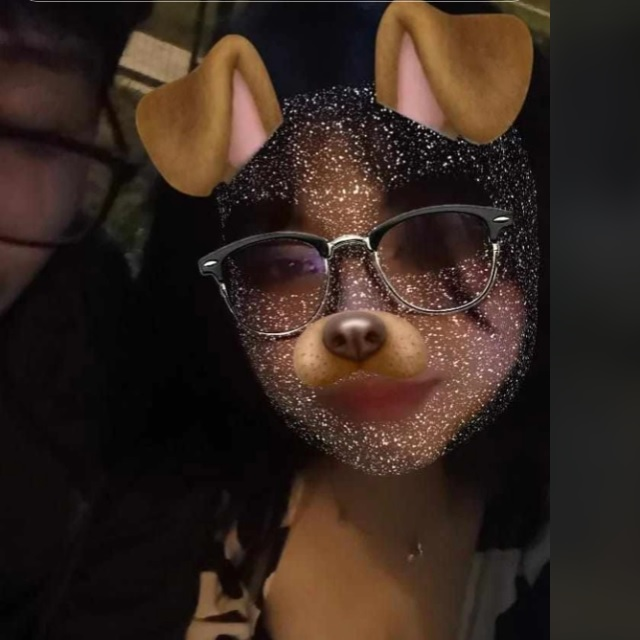
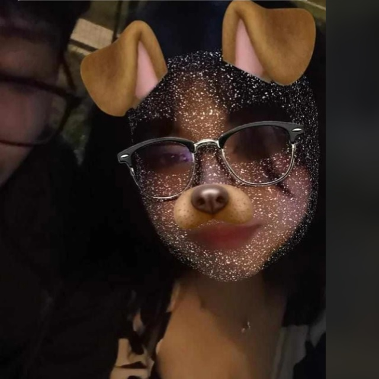
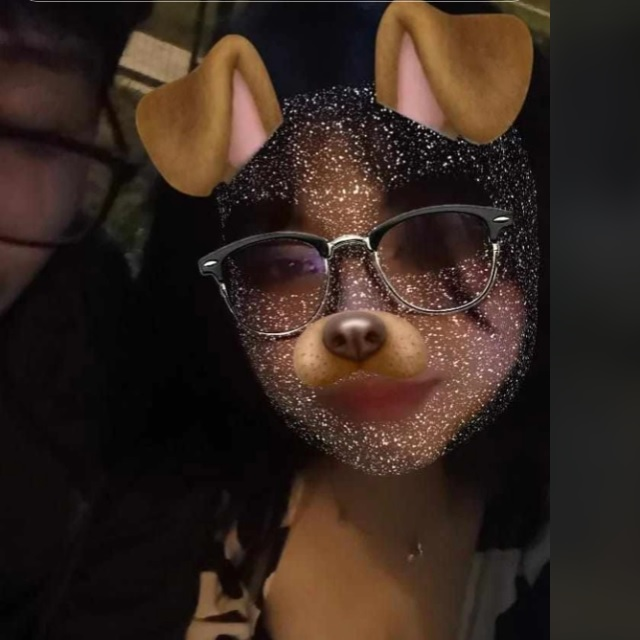

>Hola pierina, t escribo un 21 de mayo, plena madrugada, preguntadome,¿como estas? bien pequeña? espero que si, espero que estes comiendo tu comidita, como siempre lo hemos hablado preciosa, te acuerdas? cuando me enojaba por que no comias, es q tu pues mami, no comes, estas bien? te cuento algo, no he llorado, unas cuentas lagrimas quizas pero solo eso, he terminado de leer No se lo digas a nadie, de Jaime Bayly, mi favorito, tambien mi personaje como lo es Alan Garcia, si, me criticaras y criticaran, si es que subo esto como lo pienso, tal vezzz.... me estoy distrayendo jugando, estoy empeorando, solo queria escribir un rato, para darte las buenas noches, decirte que que te amo aun aylen, lo he puesto en duda algunas veces, pero llegue a la conclusion que ya no como antes, estoy seguro que igual piensas tu, solo volvemos por que, es nuestra unica nube esponjosa de vida, seguire si? descansa, Mi pequeña.
hola te vuelvo a escribir un 24 de mayo, como estas? ha pasado 3 dias desde que escribi aquella vez, me resulta un poco dificil por que hay mucha gente en mi casa, y no cuento con privacidad son las 11:11am, he estado pensando mucho en nosotros, en lo que vivimos, pasamos y sacrificamos. hemos dado tanto pierina, quizas yo no sepa lo mucho que entregaste y tu no entiendas lo mucho que entregue, no es nuestro tiempo pequeña, no podemos cambiar eso, hemos perdido, el destino nos jugo una mala pasado y terminamos derrotados, nuestro "somo el mejor equipo du mundo" se debilito y se desbanecio, pues hemos sido rendidos contra el tiempo, el destino y la distacia, nuestro amor fue sentenciado a encarcerlarse por un periodo indefinido, pero: "te prometo algo, siempre cuidare de ti... si eso hare ;)" hemos pasado tantas cosas juntas, cosas que jamas pense vivirlas ni sentirlas, cosas que solo lo veia en los cuentos o sueños llamados "inalcanzable" hemos llorado, reido, enojado, nos hemos besado la contextura de nuestros labios, chocaron, se sintienron, y me atrevo a decir, volviendo a retar al destino que fueron los mejor labios que probare en mi asquerosa, penosa y patetica vida. ojala estes bien, nose cuando enviare esto, nose enserio, estoy pensando escribir un libro, de como nos enamoramos, de cada parte, pero se que explicaria mi sentir, y necesitaria de ti para que este libro sea completo y autentico, te envio amor en donde estes pequeña, te veo todos los dias, en los atardeceres, en la gente, en la calle, tu hermosa carita, quedo plasmado en mi mente y ser, tus besos dejaron un huella en mi, que jamas seran borradas por el mar, juntar nuestros cuerpo, beber el deseo de la pasion fue el recuerdo mas lindo y fogoso que guardare, eres increible y se que no encontrare a alguien con su sonrisa de ibai, con tus cachetitos, aquellos huecos que se forma al reir, tus 5 lunares en tu carita blanda y blanca, esas cejas que nunca pude dejar de admirarlas, son perfectas, esa contextura y finidad, esos ojos, que podria a ver a traves d la coexistencia de nuestro mundo, y la muerte de la realidad y el tiempo, agarrar tu blanda mano es y sera el deleite mas satisfactorio que habre hecho, pero mirarte con tu vestido negro, es simplemente admirable, irradiable, tan gallarda, agraciada, exquisitez de cuerpo femenino, que produce el fuego de mi interior, te amo mucho, de Tu Bul, para Su Bebita...
hola, 10 de septiembre, he estado empezando a trabajar, no gano muy bien la verdad, y trabajo cerca de 10 a 11 horas, no era lo que esperaba de este mundo, es un martirio esto, he dejado de leer, de correr, habia estado haciendo un poco de ejercicio con las mancuernas q tengo, pero tmb lo deje, he dejado muchas cosas, siempre critico a los demas, pero no me doy cuenta que yo soy lo que creo q esta mal de este mundo, extraño contemplar esos momentos efimeros de tu cabello al esconderse del sol, estoy solo, conoci gente en mi trabajo, muy buenos pero obviamente mayores, me resulta increible como todo a cambiado, todo, toda mi situacion, mi pensamiento, hace solo hace solo 12 meses eras mi vida entera, te tenia en la cumbre mas alta, nuestra cabeza se fue jodiendo con las inseguridades que cometiamos nuestras inmadureces y estupudeces, ridiculamente caotico, fuimos acabando con el poco amor que nos quedaba, fue bueno lo que vivimos como tmb malo para nuestro corazon, pero mas bueno, aparte de los recuerdos y momentos pasado, entendimos y maduramos en cuestion al amor estoy seguro que con el siguiente chico q llegue a tocar ese blando corazon, sera diferente, pq aprendiste, estoy seguro, entendiste muchas cosas, al igual que yo, sobra la chica q t comente, le hice daño, pq no puedo enamorarme de ella, y para ella soy su primer amor, asi como tu fuiste el mio, me convierto en lo que odie, aveces pienso sentir cosas por ella pero, no puedo, solo siento que estoy vacio, que quiero estar solo, no quiero problemas, no quiero derramar lagrimas, no quiero sentirme mal ni insuficiente, pero bueno, espero saber de ti en algunos años, enterarme de tu vida, de que cambio en ti, de si creciste, te pintaste el cabello o si comiste... de alam para su Princesita.
hola, 8 de octubre, te cuento sobre diana, nose si sabias pero ella recien cumplira 15 XD cuando la conoci m dijo 18 csmr jajaja, es el sababado vive mas o menos cerca, asi que ire, como hay paro en lima, pienso tomar un uber o algo por el estilo, ya vere, como haz estado? pudiste sacar mi nombre de tu mente? sigo rondando por alguna esquina de tu corazon? sigo siendo tu bul? espero estes bien, y disculparme por como te trate la ultima vez q hablamos, estaba lleno de resentimiento, odio e ira. disculpa enserio, no debi hablarte asi, perdon pierina. espero hayas estado bien, bueno yo veo que si, aveces reviso tus redes, tu t iktok, pero ya no como antes, q entraba a ver tus compartidos a cada rato, literall, a cada rato, pero ya cambio eso, ahora cada q m acuerdo noma, pero bueno, espero estes bien, comiendo, y logrando lo que me comentabas y bueno pieri, se me sigo haciendo increible como todo cambio, como tomamos rumbos diferentes, como pasamos de un " buenos dias mi amor" a un ..... todo cambio, lo que jamas pense q llegaria, ocurrio, algo incoherente es que sigues en mi mente, sigues apareciendo de ves en cuando, como te dije TAL VEZZZZZ vaya unos dias antes d tu cumple, tal vez, no quiero asegurar nada, pero me gustaria ir, enserio me gustaria, verte y darte un beso en la cabeza, desearte toda la suerte del mundo y espero, encuentres la felicidad, espero de todo corazon ,que te toque un buen hombre, pero se que si la vida nos junta, volveria a ser atraido por tu aroma y suavidad, por tu voz y tu gustosa presencia, sigues aca? de Alamm para su pieri.
